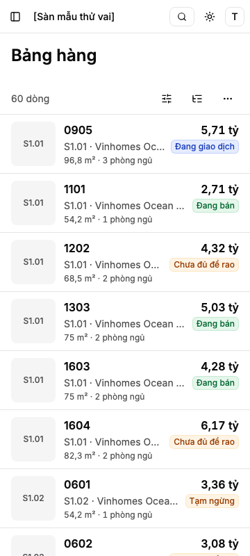
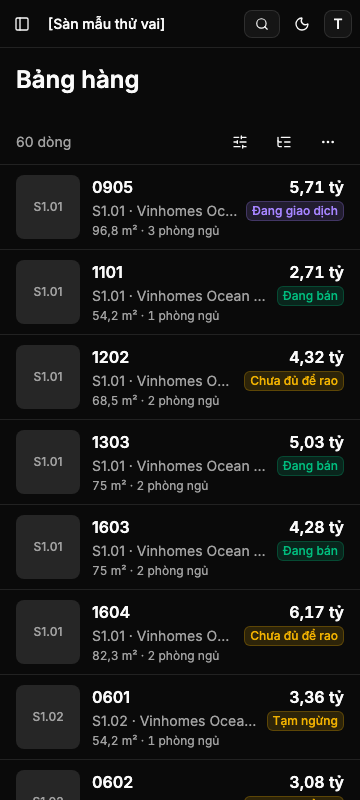
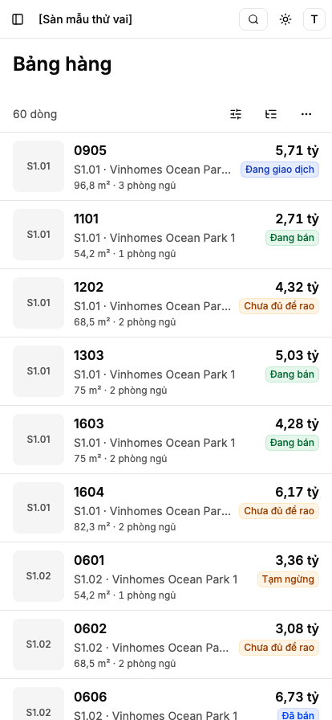
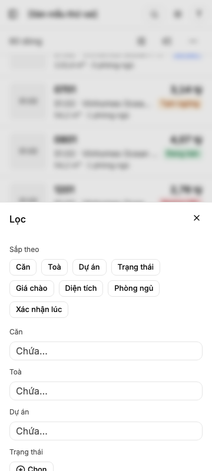
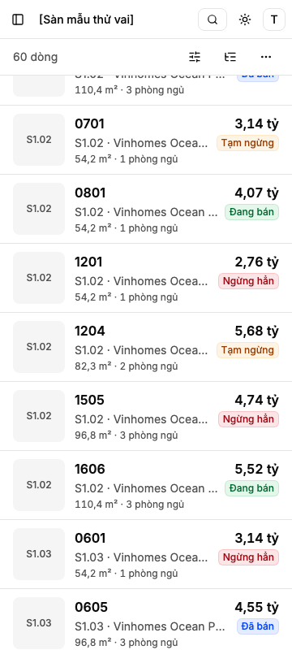
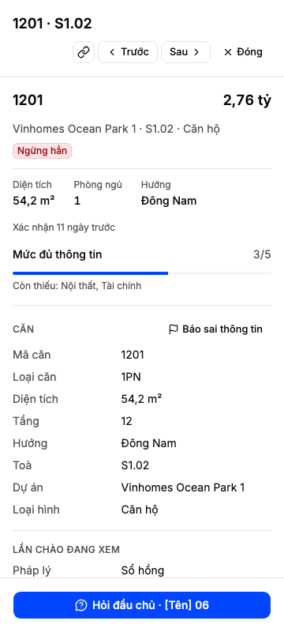
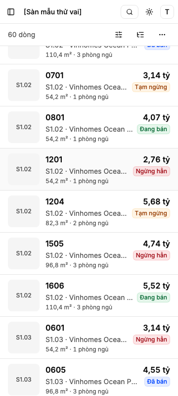
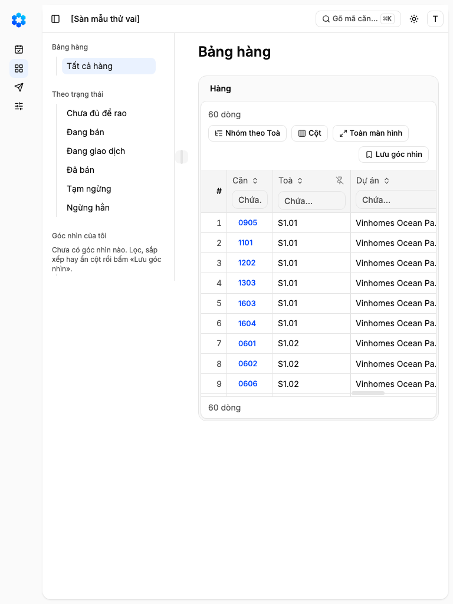

Dòng ký của Cổng Bằng chứng
Thẻ của kit in dòng «đi tiếp hay kéo lại» (lối máy tự đi tiếp). Hàng này cần chữ ký của anh vì có một tệp hạng cao (bảng dưới), nên dòng ký đúng là:
/acceptance-gate:signoff bang-hang-the-dien-thoai Ngoài-1: ghi Known limits; Ngoài-2: ghi Known limits; Ngoài-3: ghi Known limits; Ngoài-4: ghi Known limits; Ngoài-5: ghi Known limits; Ngoài-6: ghi Known limits; Ngoài-7: ghi Known limits; Ngoài-8: ghi Known limits; Ngoài-9: ghi Known limits; Ngoài-10: ghi Known limits; Ngoài-11: ghi Known limits; cắt/hoãn: đồng ý cắt; Treo: phê hết; ký hay trả: ___
Anh gõ Ký vào ô ___ để ký, hoặc Trả kèm lý do. Mười một mục «Ngoài hợp đồng» máy đề nghị ghi vào hạn chế đã biết; anh đổi ô nào thì sửa ô ấy (ví dụ «Ngoài-5: mở hợp đồng mới»).
Bản chạy hôm nay — Đầu chủ đã đăng nhập
Chụp trên commit đã chấm, Đầu chủ của sàn mẫu đăng nhập qua trang đăng nhập thật, cùng 60 căn mẫu, đã ẩn nút của công cụ dựng. Trưởng nhóm thấy đúng màn này (ảnh cong/g2-truong-nhom-360-sang.png): hôm nay chưa có nút nào khác theo vai.








Bảng hàng trên điện thoại hôm nay chỉ đọc
Thêm, sửa và xoá căn còn là thao tác «dự kiến» của sản phẩm, nên bản chạy chưa có nút «Thêm căn» hay «…» trên thẻ: hôm nay không vai nào thêm, sửa hay xoá căn được trên điện thoại. Hàng này đã dựng sẵn chỗ đặt các nút ấy và đã đo trên mẫu khuôn bộ nút theo quyền; nút hiện khi hàng 12 (thêm), 3d (sửa) và 18b (xoá) gộp. Ảnh dưới là nguyên mẫu ở Cổng Phạm vi để anh thấy chỗ đặt — không phải bản chạy (ảnh căn trong đó là ảnh minh hoạ).

Bảng thao tác của từng thực thể (G-1411-111) — điều người dùng thấy hôm nay
| Thứ trên màn | Thêm | Xem | Sửa | Xoá / Gỡ | Thao tác riêng |
|---|---|---|---|---|---|
| Căn chào (thẻ căn) | Hôm nay: không có nút «Thêm căn» ở bản chạy. Chỗ đặt (đầu màn) đã dựng và đã đo trên mẫu khuôn 9e; nút hiện khi thao tác thêm căn sống ở hàng 12 | Có, hôm nay — chạm thẻ mở hồ sơ toàn màn; mọi vai đọc được Bảng hàng | Hôm nay: không sửa được trên điện thoại, thẻ chưa có «…». Chỗ đặt («Sửa» trong «…» của thẻ và đầu hồ sơ) đã dựng và đo trên mẫu khuôn 9e; hiện khi thao tác sửa căn sống ở hàng 3d | Hôm nay: không xoá được. Chỗ đặt («Xoá căn» trong «…», có hỏi lại) đã dựng và đo trên mẫu khuôn 9e; hiện khi thao tác xoá căn sống ở hàng 18b | Có, hôm nay — trong hồ sơ: Hỏi đầu chủ, Báo sai thông tin (hàng 3e), Chép đường dẫn (3f). Chưa có: Sẵn sàng bán (hàng 14, 15), Số chủ nhà (hàng 13) |
| Góc nhìn đã lưu | Có, hôm nay — «Lưu góc nhìn» trong «…» của hàng công cụ | Có, hôm nay — mở từ thanh bên | Có, hôm nay — lưu thay đổi khi góc nhìn đang mở báo «đã đổi» (hàng 2c) | Có, hôm nay — ở thanh bên (hàng 2c) | — |
| Căn trong danh mục (khối Căn của hồ sơ) | Không — tạo căn tay khi danh mục chưa có để hàng 12 | Có, hôm nay — trong hồ sơ | Không — danh mục chung, sửa qua «Báo sai thông tin» (hàng 3e, 7d) | Không — danh mục chung | Báo sai thông tin (3e) |
| Lọc, sắp xếp, nhóm | — | — | — | — | Có, hôm nay — ngăn Lọc (có «Sắp theo»), chip lọc, nút nhóm theo Toà ở hàng công cụ |
Tệp hạng cao đã đổi
Công cụ xếp hạng xếp thay đổi này hạng CAO vì một tệp của bộ bài kiểm dùng chung là đường được bảo vệ. Hợp đồng giữ T2 theo phán quyết giám sát G-1411-144; căn cứ quyền là câu của anh ngày 14/11: «Kiểm lại quyền tôi đã giao cho bạn xử lý, nên sau này không xin». Chữ ký này là lúc anh duyệt tệp ấy.
| Tệp | Đổi gì | Phán quyết |
|---|---|---|
tools/e2e_templates/recipes.ts | Bộ bài kiểm chung của các màn lưới đo Bảng hàng trên điện thoại bằng thẻ: lọc qua ngăn Lọc, đếm ở hàng công cụ, «Xoá lọc» và «Thử lại» trả lại thẻ, chữ dài đo trong thẻ; mỗi ca phá cũng chạm tới thẻ. Chỉ chạy khi vùng có danh sách thẻ; khổ từ 768 không đổi; cùng tên ca, cùng lời ghim. | G-1411-12 điều f |
Đối chiếu bài kiểm cũ ở khổ điện thoại — gọn (AC-12)
Trước: 108 ca đỏ ở 360 và 414 vì khẳng định «ở điện thoại Bảng hàng là bảng». Sau: cả 108 xanh, không ca nào bỏ qua mà không đo; ca ở 1024 và 1440 giữ nguyên lời và kỳ vọng. Bảng đủ từng ca: _acceptance/bang-hang-the-dien-thoai/doi-bai-kiem.md.
| Cách xử lý | 360 | 414 | Ca mới đo gì |
|---|---|---|---|
| Chuyển sang thẻ — việc người dùng vẫn làm trên điện thoại | 45 | 27 | Cùng việc, đo trên thẻ: lọc qua ngăn Lọc, lối tắt trạng thái, Tab, axe, mở và lùi hồ sơ, tìm từ ⌘K |
| Chuyển sang thẻ — bộ bài kiểm chung của màn lưới | 11 | 11 | Cùng tên ca, cùng lời ghim; bài tự kiểm đỏ khi tắt nhánh thẻ |
| Không còn áp ở điện thoại — chỉ bảng mới có (phím bảng tính, cột ghim, nút tiêu đề, bề rộng cột, toàn màn hình) | 8 | 6 | Phép có đo «không có bảng, có thẻ» kèm ca phá; không bỏ qua trống |
| Tổng | 64 | 44 | 108 ca |
Hai ghi chú
- Tên đọc của thẻ (WCAG 2.5.3). Mỗi thẻ là một liên kết mang tên bằng chính chữ trên thẻ, bắt đầu bằng mã căn — không có nhãn đặt riêng. Lượt chấm đầu bắt được trình đọc màn hình nghe «Giá chào» thay cho giá; đã sửa, giờ tên thẻ có giá thật, và một phép đo mới đỏ khi có nhãn đè lên giá.
- Vùng chạm 44 × 44 (G-1411-130). Ba nút biểu tượng của hàng công cụ giữ cỡ 36 px của nhà cung cấp, mỗi nút nằm trong một vùng chạm 44 × 44; chạm vào mép vùng cũng bấm được nút. Đo ở 360 và 414, ca phá thu vùng về 36 px thì đỏ.
Ảnh của lượt chấm (bên dưới, mục E11) chụp lúc chưa đăng nhập, theo bước của bài ui-check; giữ nguyên làm bằng chứng của lượt chấm. Ảnh ở đầu trang chụp lại sau lượt chấm, cùng commit, đã đăng nhập.